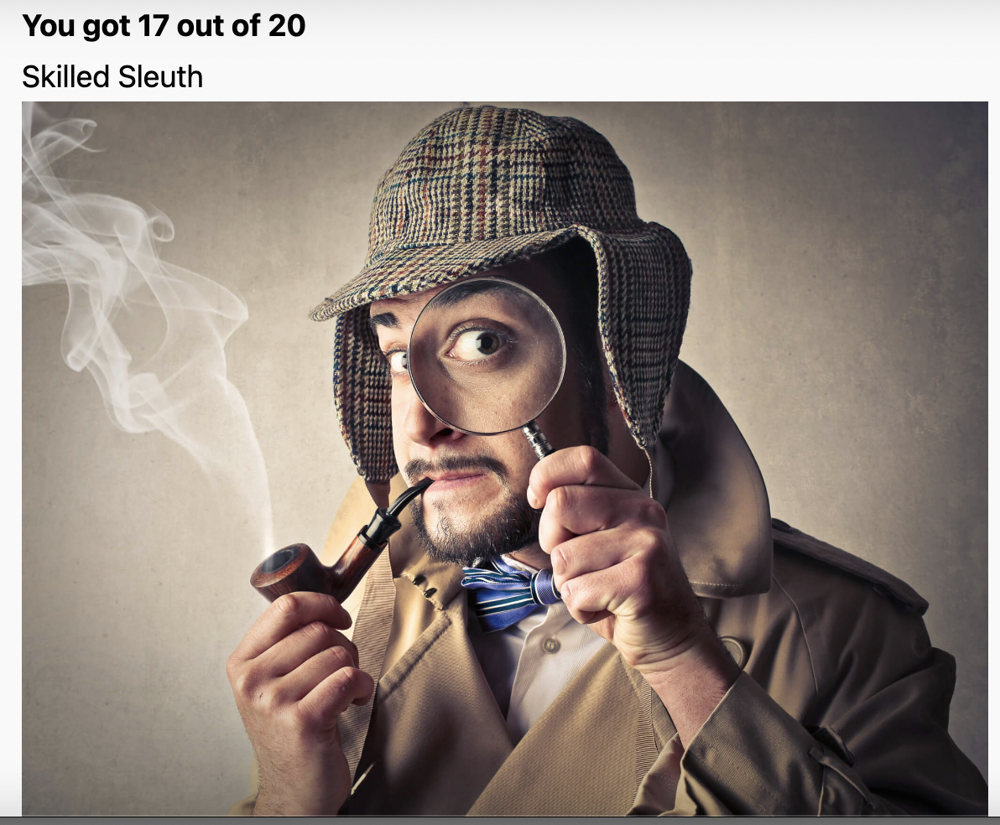

😏 Paul Ekman's Theory of Lies
For the moment, I will keep all the notes in one place. Notices are made from the book, online training and the “Lie To Me” series. When and if I make some observations, I will also keep a note. Always pay attention to change, not the final configuration, but the movement that produces it.
Dr. Ekman found evidence for seven universal emotions (fear, surprise, anger, sadness, enjoyment, contempt and disgust). Within each emotion, there are countless variations, leading Dr. Ekman to describe each emotion as constituting a family of related affective states, which share commonalities in their expression, physiological activity, and the types of appraisal which call them forth. These shared characteristics within an emotional family distinguish one family of emotions from another. For example, fear can range from slight trepidation to extreme horror and terror. They are very different experiences, but they can all be categorised into the family of fear.
✍🏻 Better concentrate on the upper part of the face (area between the eyes). There are a lot of movements in this area. Some muscle movements are slight or similar. The mouth area movement, however, is easier to spot with peripheral vision.
Emotions
- It is easy to conceal an emotion no longer felt, much harder to conceal an emotion felt at the moment, especially if the feeling is strong. Terror is harder to conceal than worry, just as rage is harder to conceal than annoyance.
- When hands begin to tremble it is much easier to do something with them—make a fist or fold them—than just let them lie still.
- Covering the face or part of it with one’s hand or turning away from the person one is talking to usually can’t be done without giving the lie away. The best mask is a false emotion. It not only misleads, but it is the best camouflage. It is terribly hard to keep the face impassive or the hands inactive when an emotion is felt strongly.
- made. If the lie requires falsifying a negative emotion rather than a smile, the deceiver may have difficulty.
- deceit: leakage, when the liar inadvertently reveals the truth; and deception clues, when the liar’s behavior reveals only that what he says is untrue.
- Even when the concealment is successful and there is no leakage of the feelings, sometimes the struggle itself will be noticeable as a deception clue.
- When an emotion begins gradually and remains slight, it may be more noticeable to others than to the self, not registering in awareness unless it becomes more intense.
- Not that carefully considering each word before it is spoken is always a sign of deceit, but in some circumstances it is.
- An honest man usually makes little mistakes, particularly in relating a long, complex story like Cliffs.
- Any emotion may be the culprit, but three emotions are so often intertwined with deceit as to merit separate explanation: fear of being caught, guilt about lying, and delight in having duped someone.
- Mary sometimes showed a fragment of a shrug—not the whole thing, just a part of it. She would shrug with just one hand, rotating it a bit. Or, her hands would be quiet but there would be a momentary lift of one shoulder.
Happy
Main characteristics:
- Both lip corners are raised.
- Wrinkles around the eyes.
- Slight narrowing of the eyes usually suggests a genuine smile.
- Changes in the lips area change the area around the nose - horseshoe wrinkle.
- Sometimes, there is a slight movement down the eyebrows.
- Slight lowering between the eyebrow and the upper eyelid.
- The narrowing of the eyes and raising the cheek, most apparent on the right side of the picture, occurs when enjoyment is actually felt.
- There is a very slight narrowing of the eye cover fold, the skin between the eyebrow and the upper eyelid which is shown on the right side of this expression. That is a sign that this is a genuine rather than a social enjoyment signal.
Contempt
- One side of the lips is raised.
- Eye area is not affected.
- Contempt is always a unilateral expression
- It Might spread to the eyebrow on the other side of the face.
Contempt vs Happy
- No tightening of the lip corner like with the happy face.
- Contempt is always only a unilateral expression and is the only such emotion.
- A mixed smile in with contempt is quite usual because people often enjoy feeling contempt.
Sad
- Inner corners of the eyebrows are raised in the centre of the forehead. If, in the normal state, the eyebrows are already oblique, then when the person is sad, the eyebrows will be flattened. ⚠️
- The cheeks are raised
- The eyes are glistening with tears *
- Lip corners go down. ⚠️ Sometimes, that causes the lower part of the face to get wider.
- Contradictions in the face - when the head is tilted upwards, not downwards. When the head tilts up, which is contrary to what usually happens in sadness when the head tilts downward.
- the drooping of the upper eyelid.
- Triangulation of the eyes
Disgust
- Raised nostril
- Raised upper lip ⚠️
- Might be accompanied by a slight inclining of the head forward by moving the chin towards the chest a bit but the head itself will be pulled backwards (like doves do).
- Wrinkles on the nose bridge and on the sides. Sometimes might be absent.
- Usually, the head will move back or to the side (in an unconscious attempt to avoid the disgusting object)
- All the action is in the center line of the face: the upper lip raised and the nose wrinkled.
Anger
- Squared (not like in fear, though, but close to disgust) or tensed lips (prissy anger). Lips are narrowed.
- Glare in the eye, upper eyelid is moved slightly up, both tightened, because eyebrows coming down (frown), but the upperlids are pulled upward.
- Jaw thrust and the face coming forwards.
- Real anger onsets slowly, while the fake has a more jagged onset.
Disgust vs Anger
- Lips are more tight with anger
- More eye glare with anger
- Head moved forward with anger and backward with disgust
- Eyebrows drawn togethher with anger
Surprise
Surprise is the briefest of all the emotions, lasting only a few seconds at most. In a moment, surprise passes as we figure out what is happening. Then surprise merges into fear, amusement, relief, anger, disgust, and so forth, depending upon what it was that surprised us. Or, it may be followed by no emotion at all, if we determine that the surprising event was of no consequence to us.
- Genuine surprise is usually a quick emotion. Anything up to 1 second is most likely a fake.
- Lower jaw drops down relaxed.
- Eyes widen.
- Eyebrows are raised.
- Horizontal wrinkles in the forehead,
Fear
Dr. Ekman distinguishes the experience of fear with three factors. Intensity: How severe is the harm that is threatened? Timing: Is the harm immediate or impending? Coping: What, if any, actions can be taken to reduce or eliminate the threat? Generally, the more significant or severe the threat is, the greater our fear response. When we are able to cope with the threat, this generally lessens or removes the fear. Alternatively, when we are helpless to decrease the threat of harm, this intensifies the fear. Whether a threat is immediate or impending can greatly impact our experience of fear. An immediate threat can either focus our attention and mobilize us to cope with the danger, or it can leads us to become overwhelmed and freeze. An impending threat can feel more distant and less intense, or we might ruminate on it for a longer time, without taking any action, thus prolonging our experience of fear.
In fear, heart rate and blood pressure increases and blood flows towards your limbs to help prepare you to fight or flee. Other regulatory functions, such as digestion, temporarily slow down or cease as more energy is diverted and devoted to coping with the immediate threat. During fear, cortisol (the primary stress hormone) is released which actually decreases the release of dopamine (which happens in response to a reward).
- Eyes wide open, and the sclera above the iris is visible. ⚠️
- Lower eyelid is tensed.
- Eyebrows are raised and flattened. They are moved towards each other.
- The lips are stretched back horizontally.
- Head moves further away (usually)
- When the person recruits the platysma muscle in their neck, you can see the stretching of the muscles in that area which often occurs with extreme fear.
Fear vs Suprise
- When feeling surprised, the jaw drops down, while in fear, it’s tense.
- When in fear, eyebrows are straightened, while in surprise, they are curved.
- The upper eyelid is lifted higher in fear than in surprise, exposing more sclera (white of the eye).
- The facial expression of fear is often confused with surprise. While both expressions show distinctly raised eyebrows, a fear expression’s eyebrows are straighter and more horizontal whereas in surprise they are raised and curved. The upper eyelid is also lifted higher in fear than in surprise, exposing more sclera (white of the eye). Finally, the lips are tensed and stretched in fear but more open and slack in surprise.
Series notes
- 1.1
- When the person repeats the question entirely, most likely, it’s a lie.
- Men touch their noses when lying since they have some rectal tissue that itches (to confirm). Saw Putin with this gesture during an interview; funny.
- When lying, people mostly keep eye contact to make sure their lie is working. They break eye contact to remember something.
- Stretched and tense arm with a hand like a stop ✋ sign - argument.
- When remembering, people tend to look to the side, trying to recall something.
- One-sided shrug. Translation: “No confidence in what I’ve just said”. If accompanied by phrases like “I don’t know” or “What are you talking about?” suggest a lie.
- Covering face with a hand and avoiding eye contact - guilt.
- Ask about the day. Then ask to repeat backwards. When lying - people won’t be able to do that.
- 1.2
- Stepping backwards, arms crossed - retreat, meaning the person doesn’t believe what he is saying.
- Touching the neck might indicate a lie (manipulator)
- Lips corners down. No other signs of sadness could indicate a lack of confidence in what someone is saying. Mouth shrug.
- Arsen + rape have a high correlation.
- Hand shrug - turning the hand palm up.
- Thrusting the chin up - anger
- 1.3
- When the voice pitch goes up - lie
- Self-comforting gestures like stroking one’s own hand/arm etc.
- 1.4
- When someone is busy making lies, the body language might be strange because the brain doesn’t have the resources to control it. In the example, it was a pointing finger gesture while making some claim.
- Showing the finger, unintentional.
- 1.5
- Pressing pointing finger(s) against one’s lip could be a sign that the person knows something and he or she is struggling to tell. Like, when it’s intentional, it’s usually accompanied by “Shhhh”.
- Some other body gesture that contradicts to what the person is claiming. Like, shaking the head from side to side while saying “yes”.
- Anger + disgust = hate
- Swallowing is a sign of a strong emotion
- 1.6
- I’m only saying this once - qualifying statement, used when the lie was told.
- 1.7
- Eyes down and away - shame.
- Agony is what is normally seen in suicide victims. Not the shame.
- Verb tenses: “I am not stealing” vs “I wan’t stealing”. Past - present and past again.
- ❓ Biting his lip - sign of what? Emotion? Or some particular emotion?
- 1.8
- Flattering of the eyes - trying to withhold some information.
- Illustrators decrease + manipulators increase -> lying.
Under Question or Observations
- I don’t remember where I get this from, but I remember someone saying that when telling lies, a person usually looks up or something, while with the remembering, they typically look down.
- When you do something wrong, this might make people do it for you. It’s a way to manipulate.
- Most often, I confuse anger and disgust.
- Anger - head forwards, sadness - backwards.
- When in the sentence that is supposed to be assertive, there is an increase in intonation as in a question -> lie?
- ❓ What are other manipulators?
- Touching the face
- ❓Contextual embedding
Other
Startle
The timing of the startle response is even more constrained than surprise- the expression is always apparent in a quarter of a second and is over in half a second. It is so fast that you will miss seeing someone’s startle if you blink. Being told you are about to be startled by a very loud noise reduces, in most people, the magnitude of the reaction but doesn’t eliminate it. Alternatively, you can’t be surprised if you know what is going to happen. No one can inhibit the startle reaction, even if one is told precisely when a loud noise will occur. Many of these differences come from the fact that startle is a physical reflex rather than an emotion, like a surprise. https://www.paulekman.com/quizzes/fear-and-surprise-quiz/
In a surprise, the eyes open wide, the eyebrows raise, and the jaw drops open. In start, the eyes close tightly, the eyebrows lower, and the lips tense.
References (To Read)
Expand…
1
https://www.paulekman.com/blog/lie-checking-catching-someone-in-a-lie/
2
https://www.paulekman.com/quizzes/lying-quiz/
Heh

3
https://www.paulekman.com/quizzes/micro-expressions-test/
4
Lying checklist https://paulekmangroup.wpenginepowered.com/wp-content/uploads/2022/03/Lying-Checklist.pdf